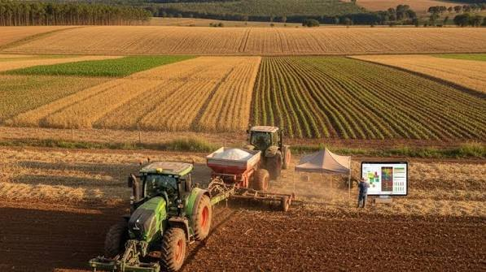
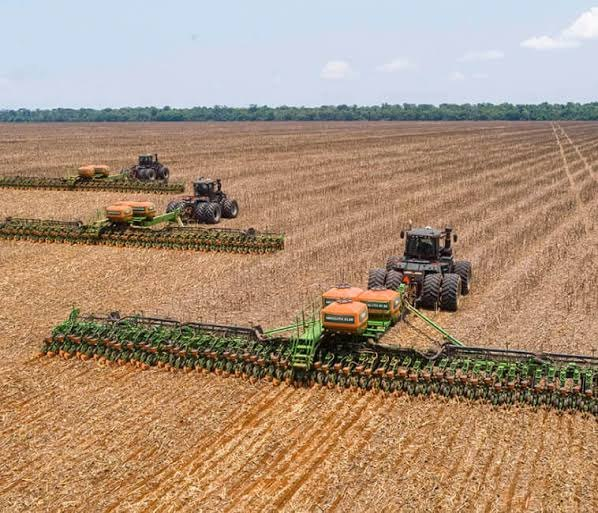
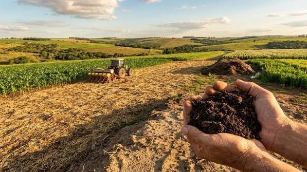

Preparação de terreno
Serviços de apoio à preparação de áreas rurais para as etapas seguintes da atividade agrícola.
Atuação em serviços de preparação de terreno, cultivo e colheita, com foco em uma execução responsável e alinhada às necessidades de cada propriedade rural.
Cada área rural tem suas particularidades. Por isso, os serviços ligados ao preparo do solo, ao cultivo e à colheita devem considerar as características do terreno e os objetivos da atividade agrícola.
A empresa atua em Novo Horizonte e região, oferecendo um canal direto para conversar sobre demandas e informações relacionadas aos serviços prestados.

Atividades alinhadas à classificação principal da empresa: serviço de preparação de terreno, cultivo e colheita.
Serviços de apoio à preparação de áreas rurais para as etapas seguintes da atividade agrícola.
Atividades relacionadas ao cultivo, respeitando as características e necessidades de cada área.
Serviços ligados à etapa de colheita, conforme a demanda e as condições da operação contratada.

A mecanização faz parte de diversas etapas da rotina no campo.
O desenvolvimento da lavoura começa com atenção ao solo e ao plantio.
Entender a necessidade da propriedade é parte importante de cada atendimento.

Cada serviço deve considerar as condições reais do terreno e da atividade.
Nosso compromisso é manter uma comunicação objetiva desde o primeiro contato, compreender a demanda apresentada e alinhar previamente as condições de cada serviço.
Entre em contato para solicitar informações sobre os serviços e verificar a possibilidade de atendimento.